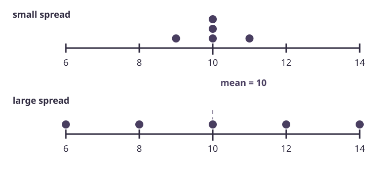

Worked example 1
Five measurements
For five measurements, and .
- .
- .
- .
- .
- .
- To 3 significant figures, the standard deviation is 2.10.
Mean = 8, variance = 4.4, standard deviation = 2.10.
The mean locates the centre. Standard deviation describes how far values spread around that centre. Raw data, grouped tables and cumulative frequencies all lead to the same calculation once the frequencies are ready.

Here, is a data value, is the mean, is the number of raw values, and is frequency. The symbol means “add all”. Squaring a value means multiplying it by itself.
Use each class midpoint . A midpoint is the average of the two class boundaries.
A square root is the non-negative number whose square gives the variance.
For five measurements, and .
Mean = 8, variance = 4.4, standard deviation = 2.10.
For four measurements, and .
Choose A or B.
| Class | |||
|---|---|---|---|
| Frequency | 2 | 5 | 3 |
| Midpoint | 5 | 15 | 25 |
Estimated mean = 16; estimated standard deviation = 7.
Six identical notebooks have mean mass 240 g and standard deviation 0 g.
Every notebook is 240 g; total mass = 1440 g.
A cumulative frequency is a running total. The variance formula needs the ordinary frequency in each class. For a non-negative variable starting at 0, subtract consecutive cumulative totals.
| Upper boundary | ≤ 10 | ≤ 20 | ≤ 40 | ≤ 70 |
|---|---|---|---|---|
| Cumulative frequency | 3 | 9 | 15 | 20 |
| Class frequency | 3 | 9 − 3 = 6 | 15 − 9 = 6 | 20 − 15 = 5 |
| Midpoint | 5 | 15 | 30 | 55 |
Estimated mean = 28; estimated standard deviation = 17.7.
The cumulative frequencies for three classes are 2, 7 and 10.
Choose A or B.
For cumulative data, subtract consecutive totals first.
Use one midpoint for each grouped class.
Find and .
Find variance, then take its non-negative square root. Use original units and round only at the end.
| Class (minutes) | ||||
|---|---|---|---|---|
| Frequency | 4 | 8 | 6 | 2 |
Estimated mean = 31 minutes; estimated standard deviation = 13.2 minutes.
Journey times start at 0 minutes. For 30 journeys, cumulative frequencies at 20, 30, 50 and 80 minutes are 5, 14, 26 and 30.
Estimated mean = 33.8 minutes; estimated standard deviation = 16.2 minutes.
Five ticket prices have mean $18 and standard deviation $0.
Every ticket costs $18; four tickets cost $72.
Frequency. Midpoint. Two totals. Square root.